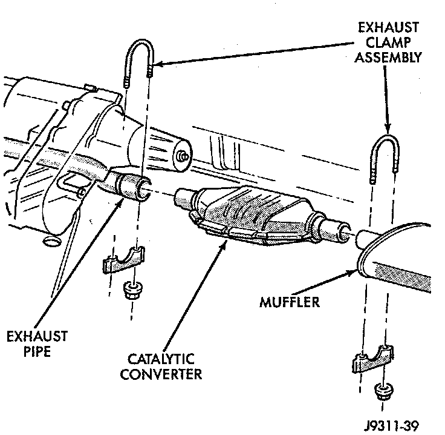
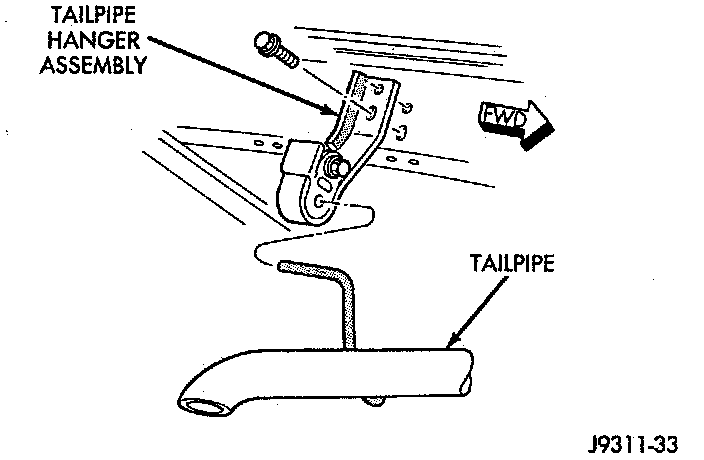

Muffler: Service and Repair
NOTE: All original equipment exhaust systems are manufactured with the tailpipe welded to the muffler. Service replacement mufflers and tailpipes are either clamped together or welded together.WARNING: IF TORCHES ARE USED WHEN WORKING ON THE EXHAUST SYSTEM, DO NOT ALLOW THE FLAME NEAR THE FUEL LINES.
REMOVAL
1. Raise and support the vehicle.
2. Saturate the bolts and nuts with heat valve lubricant. Allow 5 minutes for penetration.

3. Remove the exhaust clamp from the catalytic converter and muffler connection.
4. Heat the catalytic converter-to-muffler connection with an torch until the metal becomes cherry red.
5. While the metal is still cherry red, remove the tailpipe/muffler assembly from the catalytic converter.
6. Remove the tailpipe from the tailpipe hanger.
7. Remove the tailpipe/muffler assembly
INSTALLATION
1. If the tailpipe hanger assembly was removed, install the hanger to the frame. Tighten the bolts to 22 Nm (192 inch lbs.) torque.

2. Position the tailpipe and muffler onto the tailpipe hanger.
3. Install the muffler onto the catalytic converter. Make sure that the tailpipe has sufficient clearance from the floor pan. Install exhaust clamp and tighten the nuts to 61 Nm (45 ft. lbs.) torque.
4. Lower the vehicle.
5. Start the engine and inspect for exhaust leaks and exhaust system contact with the body panels. Adjust the alignment, if needed.